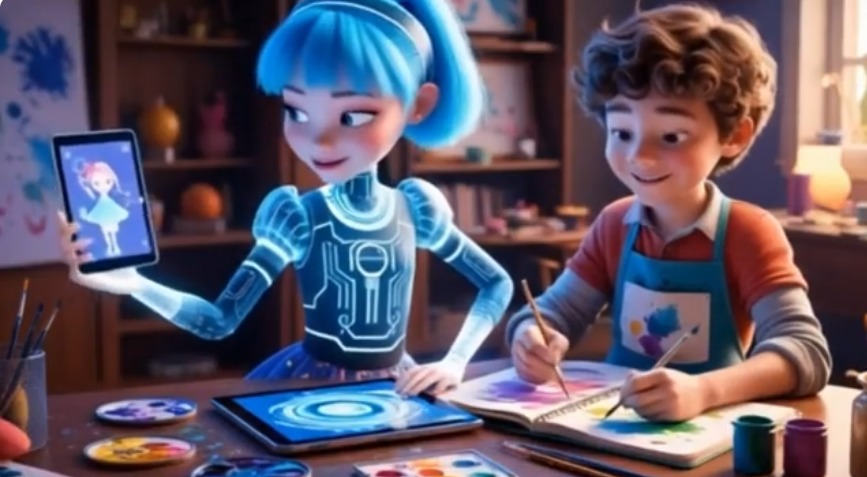

El arte digital ha transformado la sociedad al fusionar la creatividad con la tecnología. Su impacto se refleja en la democratización del arte, permitiendo a artistas alcanzar audiencias globales a través de plataformas digitales. La accesibilidad ha ampliado la apreciación artística, rompiendo barreras geográficas y sociales.
Además, la interactividad y la realidad virtual han revolucionado la experiencia artística, llevando a la audiencia a mundos inexplorados. Sin embargo, también plantea desafíos éticos, como la propiedad intelectual y la autenticidad. En conjunto, el arte digital redefine la relación entre creatividad y tecnología, influyendo profundamente en la forma en que percibimos, compartimos y creamos arte en la sociedad contemporánea.
U-tad (s. f.)
A lo largo de la historia, el arte y el diseño han sido influenciados por las herramientas a disposición de los creadores. Desde el pincel y el lienzo hasta la escultura en mármol, cada avance en la tecnología ha permitido a los artistas explorar nuevas formas de expresión. Sin embargo, pocas revoluciones han tenido un impacto tan profundo en la creación artística como la aparición de las herramientas digitales. La transición del lienzo físico al código digital ha cambiado fundamentalmente la manera en que los artistas y diseñadores conciben y producen su trabajo.(Editorial FAD, 2024)
Video fuera de este site Clic Aquí

Ejemplos de arte digital:
Ilustración digital: Creación de imágenes bidimensionales utilizando tabletas gráficas y software de diseño como Adobe Photoshop o Procreate.
Arte generativo: Obras creadas mediante algoritmos y procesos computacionales que generan imágenes de manera autónoma. Ejemplo: las creaciones de algoritmos de arte generativo en la plataforma AI Art.
Arte en realidad virtual (VR): Experiencias inmersivas creadas para entornos virtuales. Ejemplo: «Tilt Brush» permite a los artistas pintar en un espacio tridimensional en realidad virtual.
Animación digital: Creación de secuencias de imágenes en movimiento utilizando software como Adobe After Effects o Blender.
Instalaciones digitales interactivas: Obras que responden a la interacción del espectador, a menudo utilizando sensores y tecnología de seguimiento de movimiento. Ejemplo: «Rain Room» de Random International, donde la lluvia se detiene alrededor de las personas que se mueven.
Arte de realidad aumentada (AR): Obras que integran elementos digitales en entornos del mundo real a través de dispositivos como teléfonos inteligentes. Ejemplo: filtros de AR en aplicaciones como Instagram.